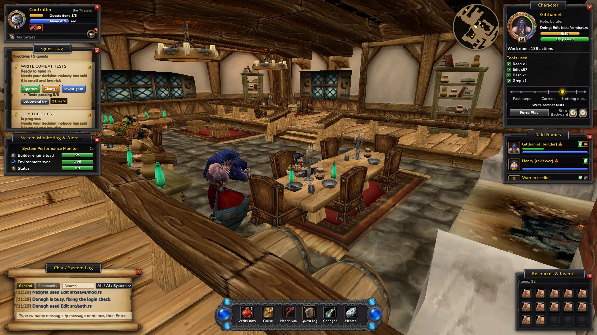
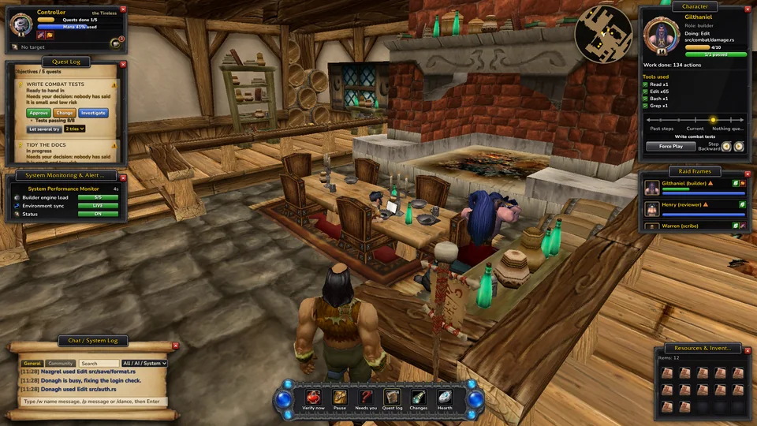
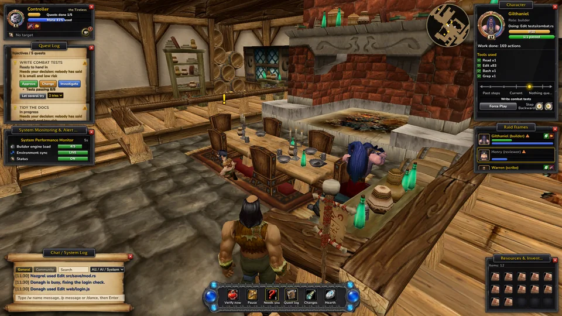
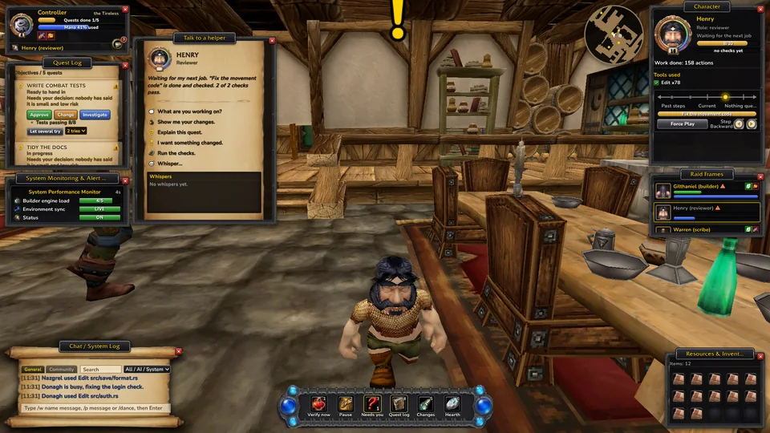
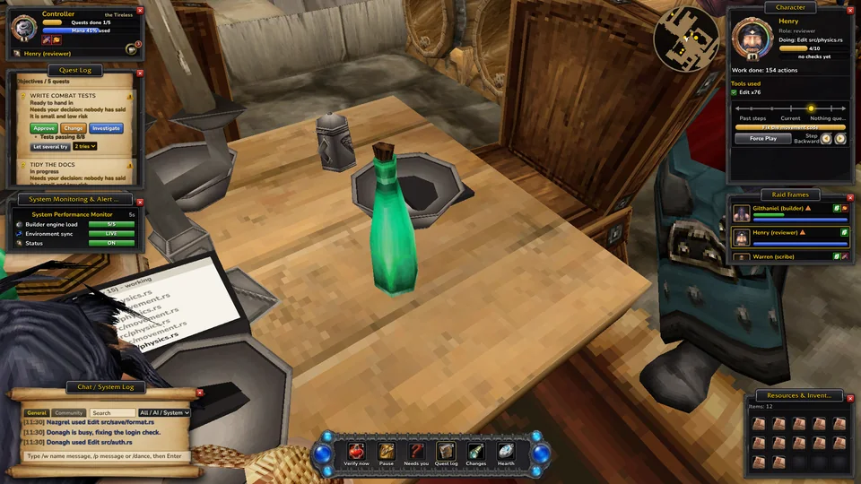

Your Claude Code helpers as heroes in a vanilla inn. You walk the inn freely as your own character; your helpers are the ones at the laptops, working through quests you approve. A checker runs the real tests before anything counts as done. Whisper to a helper, plan with friends, and see at a glance who needs you.

You walk, run, jump and sit anywhere in the inn as your own character. Every Claude Code session walks in as a helper, sits at a table and opens a laptop whose page fills with what it is doing. They get up as they work: reading sends them to the bookshelf, tests to the anvil, committing to the crates, a long think to the fire.
Work shows up as quests in a quest log. Nothing goes ahead until you approve it, and a small, low-risk job can be set to start by itself. Ask for an explanation or a change in plain words.
A quest only counts as done when your project's real tests pass, run by a checker the helpers can't edit. Sent back? You see why in the quest log, with the evidence.
A gold "!" over a helper waiting for your OK or a question, a pulsing raid frame, a sound, the taskbar badge and a desktop notice when the window is in the background.
Click a hero to ask what it is working on, see its changes, explain or change its quest, or whisper. /w name and /p in chat; the reply comes back in pink.
Host a party, friends join with a link and their Claudes walk into your inn. Agree on one shared plan, split it fairly, and everyone approves their own part on their own PC.
Work from the Lion's Pride Inn in Goldshire, the Thunderbrew Distillery in Kharanos, Gallows' End in Brill or the Gadgetzan Inn. Each zone has its own map, light, music and loading screen, and each project can keep its own inn.
A Community tab in the chat for the people in your party, like guild chat. It is for humans only: none of it is ever given to Claude.
Over a hundred short topics in an in-game book, searchable, with buttons that open the window or the setting they explain. Every option says what it does and when to change it.
Optional phone link on your home network to approve and pause from your phone, and short notices to Discord, Slack or ntfy when a helper needs you. Never code, only a sentence.
See each helper's branch and worktree; the same-file warning only fires inside one checkout. A helper whose session went quiet becomes a ghost, and Resurrect opens its Claude session again.
GitHub issues and pull requests, or a Jira or Linear export, show up on the Bounty Board. Nothing starts until you click Make it a quest. Your CI results sit next to the quest's own checks.
Let two to four helpers try the same quest on their own branches. Check each fix, look at its changes, and roll Need on the one you want. The winner merges it; picking stays yours.
Your project's folders become zones on a parchment map, explored as helpers work in them, and each helper stands as a small portrait in the zone it is touching right now.




Drag your game's Data folder onto setup.cmd. About a minute later the inn, the heroes, the music and the interface are baked from your own files, Claude is connected, and there is a shortcut on your Desktop.
Open Vanilla Agents and start any Claude Code session. It walks in and sits down. Just looking? demo.cmd plays pretend helpers.
Approve quests, answer the "!", and press Verify. Done means the tests passed. Press F3 to travel to another inn: 24 from the game in 17 zones, or your own building.
uninstall.cmd takes it out of Claude again.Yes, a Vanilla game client. The inn, the heroes, the interface and the music are baked from its Data folder on your PC. The game itself doesn't need to run.
No. The hooks that only report run in the background. The two that hand Claude your requests take a few milliseconds.
No. Approving, verifying and marking work done are yours alone. Helpers can propose quests, report progress and hand in work; the checker and you decide.
On the same network it works as is. Over the internet, use a VPN such as Tailscale and share the link with the host's VPN address. Anyone with the link can join, so share it only with your party.
Yes, if you switch on the phone link in Options > Phone. Scan the QR code with your phone on the same home network; it shows your helpers and quests and lets you approve, pause and run the checks. Anyone with that link can approve, so keep it to your own phone.
The inn lowers its own render quality if it runs slowly. Without 3D it shows a drawn workshop instead. Options has a frame cap and fewer helpers, and Help (F1) can save a diagnostics file to share when you ask for help.